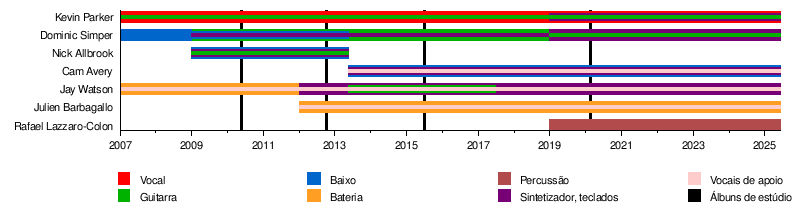

Membros
Estúdio
Kevin Parker – todos os vocais e instrumentos, produção (2007–presente)
Ao vivo
Parker – vocais, guitarra e kazoo (2007–presente), ocasionalmente sintetizador (2019-presente)
Jay "Gumby" Watson – vocais de apoio (2007–presente), bateria (2007–2012), sintetizador, teclados (2012–presente), guitarra adicional (2013–2017)
Dominic Simper – guitarra, sintetizador e teclados (2009–presente), baixo (2007–2013)
Julien Barbagallo – bateria e vocais de apoio (2012–presente)
Cam Avery – baixo, vocais de apoio e sintetizador (2013–presente)
Rafael Lazzaro-Colon – percussão (2019–presente)
Ex-integrantes
Nick "Paisley Adams" Allbrook – guitarra, sintetizador e baixo (2009–2013)
Loren Humphrey – bateria (2019; substituto de Julien Barbagallo)[105]
Linha do tempo da banda ao vivo
